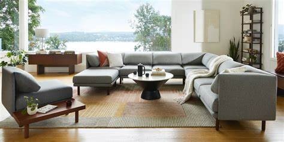

Burrow

Stephen Kuhl and Kabeer Chopra decided to start Burrow when they saw friends paying to have their couches cut apart in order to get them up narrow New York City apartment stairwells. Burrow helps eliminate the pain points of purchasing a couch and is specifically designed to support its customers as their lives evolve.
The company has been featured in the NY Times, TechCrunch, Inc. (magazine), and The Macro.
Burrow is a New York City-based direct-to-consumer furniture brand aimed at solving the pain points of the industry. Its first product is a high-quality, affordable, modular, luxury couch. Burrow claims to fill a void in the furniture space with a quick and easy buying experience that allows customers to select products online that are shipped quickly and efficiently to their doorstep. The company participated in the Y Combinator Summer 2016 batch.
Stephen Kuhl and Kabeer Chopra decided to start Burrow when they saw friends paying to have their couches cut apart in order to get them up narrow New York City apartment stairwells. Burrow helps eliminate the pain points of purchasing a couch and is specifically designed to support its customers as their lives evolve.
The company has been featured in the NY Times, TechCrunch, Inc. (magazine), and The Macro.